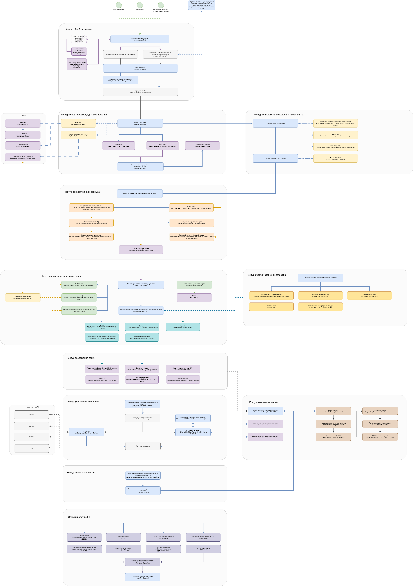

Тут представлені матеріали та документація до підсистеми "Інтелектуальні сервіси" Єдиної Судової Інформаційно-комунікаційної Системи (ЄСІКС).
ІНТЕЛЕКТУАЛЬНІ СЕРВІСИ
Архітектура підсистеми побудована на децентралізованих обчислювальних вузлах зі споживчими графічними прискорювачами (наприклад, NVIDIA RTX 4070 Ti), що забезпечують локальне виконання квантованих великих мовних моделей (Llama-3-8B-Instruct, Phi-3).
Такий підхід («Air-Gapped») дозволяє обробляти конфіденційні дані та матеріали безпосередньо в захищеному периметрі установи, унеможливлюючи витоки інформації через глобальну мережу Інтернет, що відповідає вимогам КСЗІ та стандартам NIST SP 800-53.
Для мінімізації галюцинацій моделей використовується локальний семантичний пошук RAG на базі індексів HNSW (FAISS) та швидких сховищ (RocksDB), а перед обробкою тексти проходять обов'язкову NER-фільтрацію та маскування персональних даних. Програмний стек підтримує оптимізації PagedAttention та Continuous Batching для багатокористувацької роботи в умовах обмеженого VRAM.
ПРОЄКТНА ДОКУМЕНТАЦІЯ
Технічні завдання та вимоги щодо впровадження підсистеми:
АРХІТЕКТУРА
Схема процесу обробки даних в підсистемі "Інтелектуальні сервіси" з виділеними K8S просторами.

Завантажити схему в інших форматах: SVG | PDF | Draw.io Source
{kind=link}
ПЕРЕЛІК СЕРВІСІВ
Склад та функціональні можливості підсистеми:
- Сервіс вилучення сутностей та аналізу матеріалів справ
- Сервіс моніторингу аномалій
- Сервіс перевірки сталості практики судді
- Сервіс моніторингу єдності практики суду
- Сервіс аналізу практики Верховного Суду, Європейського суду з прав людини
- Сервіс аналізу застосування законодавства (недієві, застарілі, незастосовані норми)
- Сервіс підготовки проєктів судових рішень
- Сервіс підготовки статистичних звітів